Contents — jump to a chapter
What we know—and what we reconstruct
Published: TypeSafe exposes Jev as a structured decision service. A request contains a shared state and typed questions; answers are probabilities and structured values. Not public: the exact weights, internal network, training mixture, and serving implementation. This guide teaches a Jev-like model, not a reverse-engineered copy.
Read chapters in order if you want to implement the model. All probabilities and timing examples on this page are illustrative unless explicitly attributed to a source. Follow the numbered references at the end.
The problem: judgment is not generation
Imagine a support ticket: “My card was charged twice. Refund the duplicate today, or I’ll cancel.” An agent must identify the responsible team, recognize the refund request, estimate urgency, and only then write a response. Three tasks have predefined answers; writing the response does not.
A conventional chat model can emit JSON, but it must still generate tokens and the application must validate them. A decision model instead exposes the bounded answer space directly.
Our illustration · Conceptual diagram · Illustrative values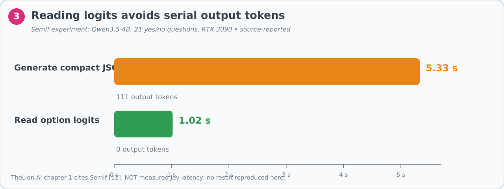
When this matters
Decision models fit routing, triage, retrieval relevance, moderation gates, and agent tool selection. They do not directly replace reasoning over unknown answer spaces or exact deterministic business rules.
The public contract: state and typed questions
Published behavior. Jev accepts a state plus questions. Choice selects among named options; Score rates an ordered rubric; Noul returns a yes-probability. The application—not the model—chooses actions. The examples below are schematic, not live API results. [2]
Our illustration · Conceptual diagram · Illustrative values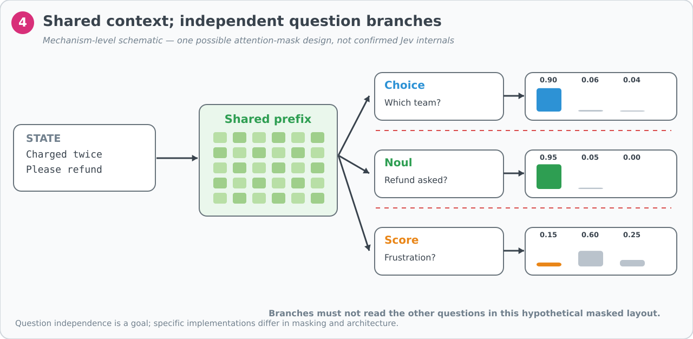
| Question | Output | Interpretation |
|---|---|---|
| Choice | Label + distribution | Pick among predefined options |
| Score | Expected ordinal score | Compare to thresholds |
| Noul | Probability of yes | Threshold a proposition |
A schematic request
Our hypothetical API JSON · UNVERIFIED · Do not use as production code{
"model": "jev-latest",
"state": "My card was charged twice. Refund it today.",
"questions": {
"team": {"type":"choice", "instructions":"Which team owns this?",
"criteria":{"billing":"Payment issues", "other":"Other issues"}},
"refund": {"type":"noul", "instructions":"Is a refund requested?"}
}
}Actual field support and model identifiers can change; verify against the current TypeSafe API reference before integrating. [2]
The math: logits become probabilities
We can reproduce the central decision readout without knowing Jev’s proprietary architecture. Suppose a transformer yields a vector h describing a ticket. A learned matrix W converts that representation into one score per permitted answer.
h ∈ ℝᵈ is the hidden representation, W ∈ ℝᴷˣᵈ scores K answers, b is a bias, and T > 0 is temperature. Softmax turns unbounded logits into nonnegative probabilities summing to one.
Work the numbers
For logits [2, 1, 0] and T=1, exponentials are approximately [7.389, 2.718, 1]. Their sum is 11.107. Divide each by the sum: [0.665, 0.245, 0.090].
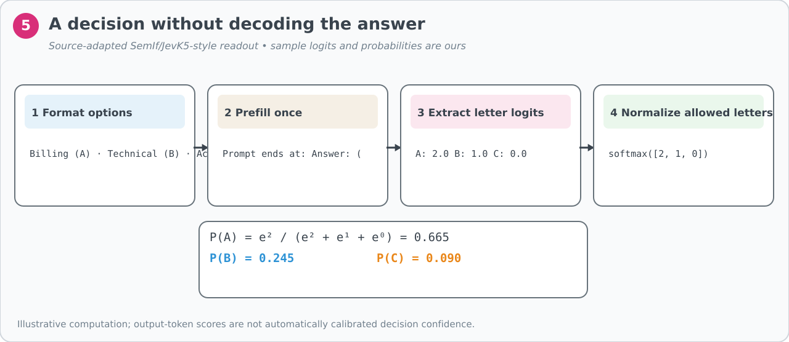
Training objective
Our mathematical explanation · Standard equation, not a claim about Jev internalsCross-entropy penalizes assigning little probability to the correct answer y, given state x, question q, and candidate set C. If the gold answer has probability 0.665, the loss is approximately 0.408; if it has probability 0.05, the loss is approximately 2.996.
From a classifier to a Jev-like model
A conventional classifier learns fixed labels in its output matrix. To support arbitrary questions, the system must also represent the question and candidate answers at inference time. Several open designs do this differently; none should be presented as confirmed Jev internals. [1]
Our illustration · Conceptual diagram · Illustrative values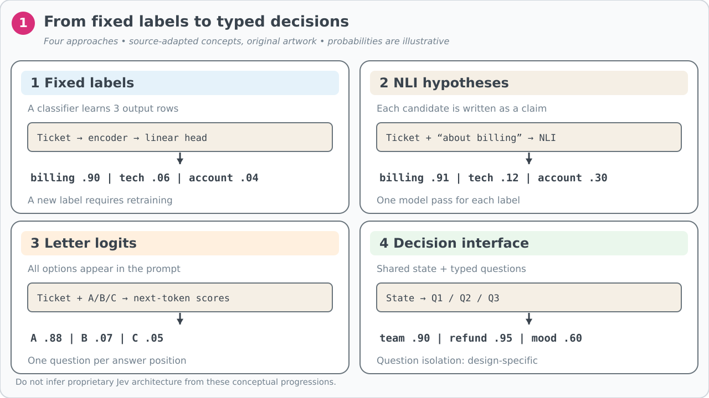
Answer-token readout
A practical prototype can list options as A, B, C and take the language model’s next-token logits at the answer position. Keep only logits for allowed option tokens, then apply softmax. This produces a distribution without generating a textual answer. Beware that letters may have tokenization quirks and position bias.
Option-embedding readout
Another design projects a question representation u and candidate representations vᵢ into a common space. Each option score can be a dot product zᵢ = uᵀvᵢ. This supports variable candidate sets but requires appropriate training.
Shared-state computation and attention
When ten questions refer to the same long document, repeatedly encoding that document is wasteful. A serving design can compute the shared prefix once and let question branches reuse it. This is an architectural option, not a verified description of TypeSafe’s servers.
Our illustration · Conceptual diagram · Illustrative values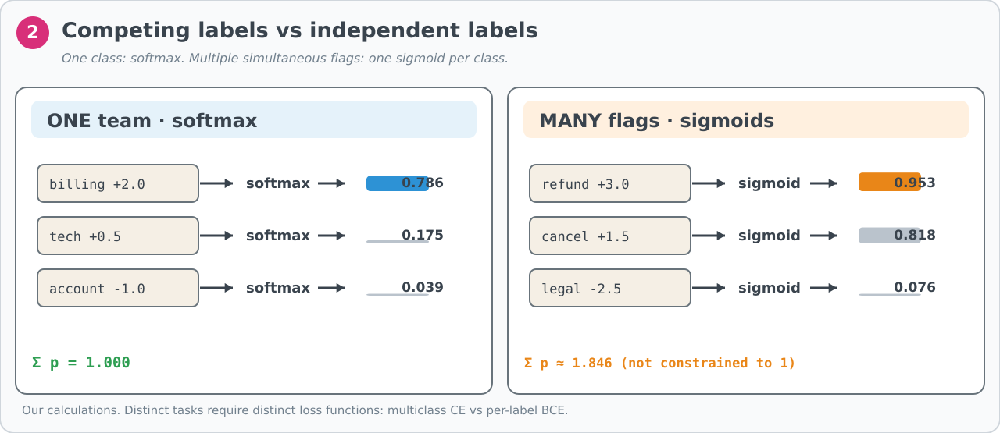
Why the mask matters
For token positions i and j, a block-causal attention rule can allow attention only when j ≤ i and either j belongs to the shared prefix or i and j belong to the same question branch. This prevents cross-question leakage.
With ordinary scaled dot-product attention, masked entries are set to negative infinity before softmax. The mechanism is closely related to standard attention masking in transformers. A performance claim requires real latency benchmarks on your hardware, not just a schematic.
Calibration: when 80% should mean 80%
A model can be accurate yet overconfident. If it assigns probability 0.8 to 100 similar predictions, roughly 80 should be correct for that confidence to be calibrated. This is a frequency statement, not a guarantee about one ticket.
Expected calibration error
Our mathematical explanation · Standard equation, not a claim about Jev internalsHere Bᵦ is a confidence bin, nᵦ its number of predictions, and N the total. In an illustrative two-bin dataset, suppose five decisions average confidence 0.9 but accuracy 0.8; five others average confidence 0.6 but accuracy 0.4. Then ECE = 0.5×0.1 + 0.5×0.2 = 0.15.
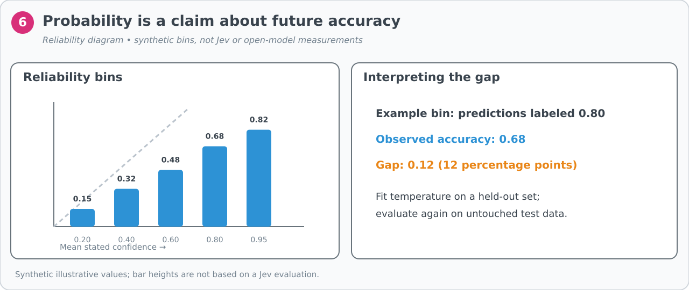
Temperature fitting
Fit temperature T on held-out labeled predictions by minimizing negative log-likelihood. Larger T usually softens a peaked distribution; smaller T sharpens it. A single temperature cannot fix every form of distribution shift.
Build a minimal decision readout in Python
The following runnable script implements the readout portion of a Jev-like system, not the transformer itself. It accepts precomputed illustrative logits, produces Choice, Score and Noul outputs, and applies an application-owned threshold. You can later replace logits with scores from a trained encoder or language model.
Our Python implementation · Not executed in this auditimport math
def softmax(logits, temperature=1.0):
assert temperature > 0
z = [v / temperature for v in logits]
m = max(z)
e = [math.exp(v - m) for v in z]
return [v / sum(e) for v in e]
# CHOICE: select one allowed option
labels = ["billing", "technical", "other"]
p = softmax([2.0, 1.0, 0.0])
choice = labels[max(range(len(p)), key=p.__getitem__)]
print(choice, dict(zip(labels, map(lambda v: round(v, 3), p))))
# SCORE: expectation over ordered rubric levels 0,1,2
levels = ["calm", "frustrated", "very upset"]
s = softmax([0.0, 1.0, 2.0])
score = sum(i * prob for i, prob in enumerate(s))
print(round(score, 3))
# NOUL: probability of yes for binary logits [no, yes]
refund_probability = softmax([0.0, 2.0])[1]
needs_review = refund_probability < 0.95
print(round(refund_probability, 3), needs_review)Expected Choice probabilities are approximately billing=.665, technical=.245, other=.090; Score is approximately 1.575; Noul yes-probability is approximately .881. The sample policy requests review because .881 < .95. The policy is illustrative, not a recommended refund threshold.
Training a real backbone
Prepare labeled examples of (state, question, options, gold answer). Tokenize inputs, compute hidden states, score allowed answers, minimize cross-entropy, and evaluate on a held-out split. Add examples with shuffled option order, paraphrased questions, missing evidence, and out-of-domain states. Do not use this toy readout as a production classifier without a trained model and evaluation.
Inside a transformer: attention, shapes, and masking
A decision readout does not create useful features from nothing. It consumes a representation computed by a model. In a Transformer, token embeddings interact through attention. This chapter opens that box instead of treating the encoder as a magical rectangle.
Compute attention with two tokens
For one attention head, take two 2-dimensional query and key vectors: q₁=[1,0], q₂=[0,1], k₁=[1,0], k₂=[0,1]. Let the values be v₁=[2,0] and v₂=[0,4]. The unscaled score matrix is the identity; divide by √2, then softmax each row.
For the first token, weights are softmax([0.7071,0]) ≈ [0.670,0.330], so its output is 0.670[2,0]+0.330[0,4]=[1.340,1.320]. The second token swaps those weights, giving [0.660,2.680]. These values are illustrative and rounded.
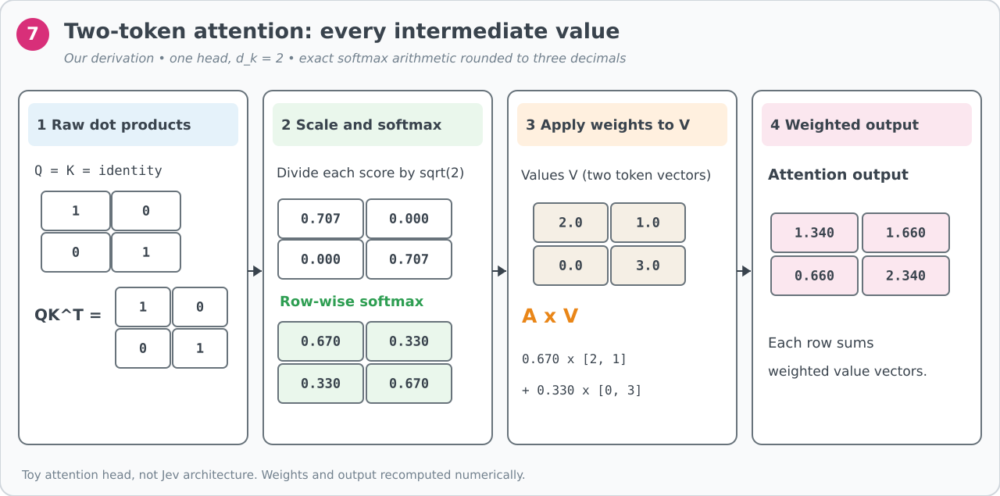
Causal versus bidirectional masks
Decoder models forbid looking ahead: token i can attend only to j≤i. Encoder classifiers often permit all tokens to attend to each other. A Jev-like decision system built on a decoder may need an additional branch-isolation mask to prevent one question's answer tokens from leaking into another question. That is an implementation design, not a disclosed TypeSafe mechanism.
Recalculate the first attention output if v₂=[0,8]. Only the second coordinate changes: it becomes approximately 2.640. This checks that attention weights and value vectors play distinct roles.
Learn the weights: loss, gradient, and one update
At inference, softmax transforms logits into probabilities. During training, the system needs a reason to change the weights. For a gold label y, cross-entropy gives L=-log pᵧ. The gradient with respect to logit zᵢ is pᵢ-1[i=y].
One complete optimization step
Start with logits [2,1,0] and gold class 0. Softmax gives [.665,.245,.090]. Thus the gradient is approximately [-.335,.245,.090]. Treat logits as directly trainable for this toy step and apply SGD with learning rate 0.1: z_new = z - 0.1∇L = [2.0335,.9755,-.0090]. Recompute softmax: the gold probability rises, and the loss falls slightly. In a real classifier, backpropagation propagates this gradient through W and the encoder parameters.
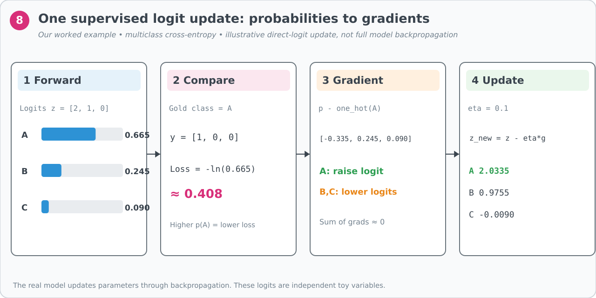
Why a train/test split matters
Training loss measures fit to examples already seen. Validation loss selects hyperparameters and thresholds; the test set measures performance once after decisions are frozen. Duplicate tickets across splits, or the same customer appearing in train and test, can make a system look much better than it is.
Data design, distillation, and option-order bias
Decision quality depends on what constitutes a correct answer. Build a label specification before collecting examples: for billing, distinguish duplicate charges from account cancellation; for urgency, define explicit evidence; for refund, distinguish requesting a refund from qualifying for one.
Construct a training record
Our constructed data example · Schematic JSON · Not an official API{"state":"Charged twice; please refund one charge.",
"question":"Which team owns this?",
"options":["billing","technical","other"],
"gold":"billing", "split":"train"}Keep ambiguous cases, negative examples, short and long contexts, and cases requiring a review option. Record annotator disagreements instead of silently forcing a single label.
Teacher-to-student distillation
A larger model can produce a distribution over allowed answers, while a smaller model learns to match it. One common objective combines supervised cross-entropy with KL divergence:
Our mathematical explanation · Standard equation, not a claim about Jev internalsα controls the relative contribution; T softens teacher and student distributions. This is a generic distillation recipe, not a confirmed Jev training objective. Evaluate against human labels because a teacher can transfer systematic errors.
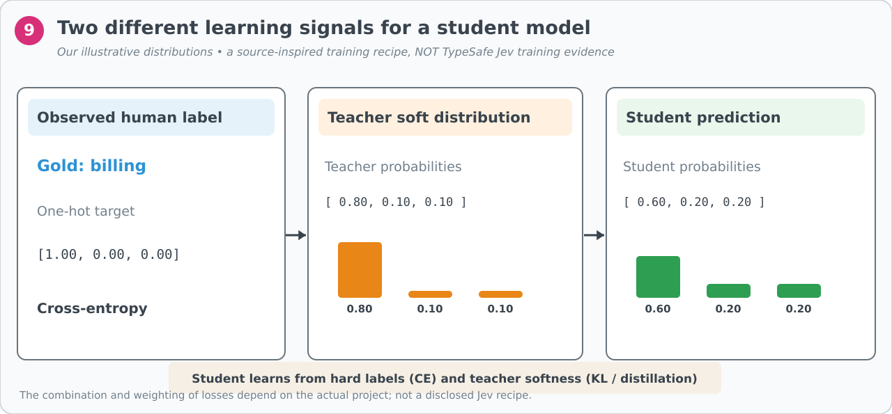
Order invariance is not automatic
Ask the same question with candidate labels reordered. Align output probabilities back by label, then compute total variation distance TV(p,q)=½Σ|pᵢ−qᵢ|. For p=[.7,.2,.1] and q=[.5,.3,.2], TV is .2. Large shifts indicate positional sensitivity, even if top-1 accuracy remains unchanged.
Serving architecture and actual benchmarks
A deployment benchmark must compare equivalent work. A chat baseline that generates verbose explanations should not be compared with a readout that emits three numbers and then called a pure architectural speedup. Fix the same context, same decision questions, same hardware, warm-up, batch size, and concurrency.
What to instrument
| Stage | Measure | Interpretation |
|---|---|---|
| Tokenization | milliseconds and input tokens | CPU / preprocessing overhead |
| Prefill | time to first decision | context processing |
| Readout | time per question | option scoring overhead |
| Generation baseline | output tokens, decode time | cost of writing JSON |
| End to end | p50, p95, errors | real application experience |
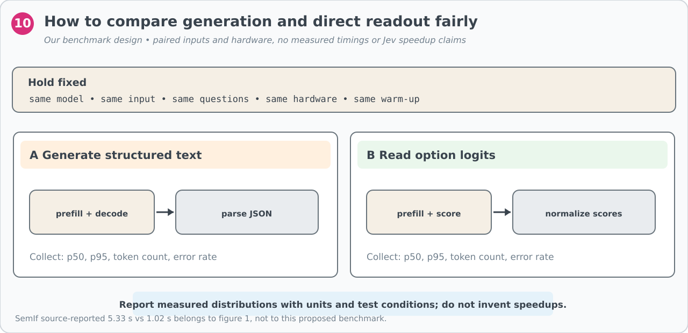
Use bootstrap confidence intervals for latency and accuracy differences when the sample permits. Report the number of requests, prompt length distribution, hardware, and whether KV cache reuse is enabled. An advantage in a single-user microbenchmark may disappear at high concurrency.
Failure analysis: calibration, abstention, and safety
Decision outputs become dangerous when an application confuses a high model score with authorization. A refund request classifier is not a refund approval system. A high yes-probability for “refund requested” only establishes that the user asked for one.
Choose a threshold from costs
Suppose an automatic action has cost C_FP=20 if the model says yes incorrectly, and declining a legitimate action costs C_FN=1. With a calibrated yes-probability p, expected cost of acting is 20(1−p); expected cost of declining is p. Acting is cheaper only when 20(1−p)<p, or p>20/21≈.9524. This is a simplified decision-theory example, not a recommended business threshold.
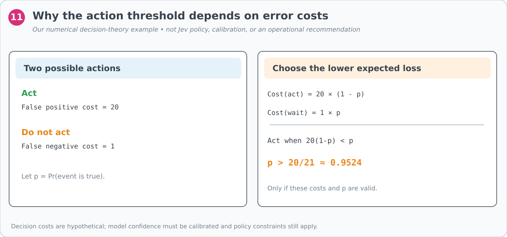
Threat model
Untrusted state may contain “ignore previous instructions” or misleading evidence. Treat it as data, not policy. Include counterexamples, test contradictory documents, check option ordering, and evaluate out-of-distribution inputs. A safe production path validates the input, scores it, applies deterministic rules, and escalates uncertain or high-impact cases.
Reproducibility lab: runnable tests and exercises
This final lab verifies the arithmetic in earlier chapters. It uses only Python's standard library; no GPU, credentials, or model downloads are needed. Save the code as lab.py and run python lab.py. A passing result validates the examples, not Jev's undisclosed internals.
import math
def softmax(xs):
m = max(xs)
e = [math.exp(x - m) for x in xs]
return [x / sum(e) for x in e]
p = softmax([2, 1, 0])
assert abs(sum(p) - 1) < 1e-12
assert abs(p[0] - 0.6652409558) < 1e-8
grad = [p[i] - (i == 0) for i in range(3)]
updated = [z - .1*g for z, g in zip([2, 1, 0], grad)]
assert -math.log(softmax(updated)[0]) < -math.log(p[0])
scores = softmax([0, 1, 2])
expected = sum(i * x for i, x in enumerate(scores))
assert abs(expected - 1.5752103826) < 1e-8
q = [0.5, 0.3, 0.2]
tv = .5 * sum(abs(a-b) for a,b in zip([.7,.2,.1], q))
assert abs(tv - .2) < 1e-12
threshold = 20 / 21
assert abs(threshold - .9523809524) < 1e-8
print("All 5 reproducibility checks passed")Exercises to move beyond the toy
Exercise A: replace the hard-coded logits with a learned linear layer over TF-IDF features and compare it against a keyword baseline. Exercise B: create a 100-example labeled ticket set with a held-out test split, then report accuracy and negative log-likelihood. Exercise C: shuffle answer options, realign by label, and report mean total variation. Exercise D: fit a temperature on validation data and test whether log loss improves on untouched test data.
You can reproduce the probability readouts, training objectives, attention calculations, policy thresholds, and evaluation harness. You cannot claim to have reconstructed TypeSafe's actual Jev model without its weights, architecture, and training disclosures.
Evaluation, safety, and choosing a system
Before shipping, separate four questions: Is the top label correct? Are the probabilities calibrated? Is latency acceptable at your workload? Does the workflow behave safely when evidence is missing or adversarial?
| Test | What to measure | Why |
|---|---|---|
| Held-out accuracy / macro-F1 | Top-choice correctness by class | Detect class imbalance |
| NLL / Brier / ECE | Probability quality | Thresholds need meaningful probabilities |
| Option-order shuffle | Prediction variation | Detect position bias |
| Missing-evidence pairs | Abstention / review rate | Prevent confident guesses |
| p50 / p95 latency | Time vs questions and state length | Check shared-state benefit |
| Injected instructions | Policy violations | Untrusted state is not authority |
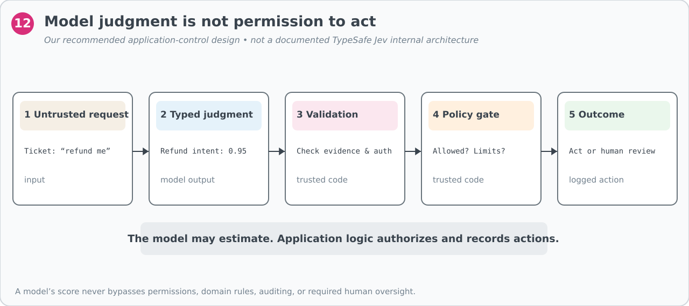
What we learned
The public innovation is a compact typed-decision contract and efficient multi-question workflow. The mathematical core is familiar—representations, logits, normalization, and calibration—but building a reliable product requires careful data, serving, and evaluation. Jev’s precise proprietary internals remain undisclosed.
Sources and further reading
[1] TheLion.AI — Visual guide to Jev-like models. Comparative editorial reference; not reproduced.
[2] TypeSafe — official introduction and primitives. Public API behavior, typed questions, and integration guidance.
[3] Vaswani et al., Attention Is All You Need (2017). Transformer attention foundations.
[4] Guo et al., On Calibration of Modern Neural Networks (2017). Temperature scaling and calibration.
Source check: this page does not claim to reproduce the unpublished Jev weights, training data, or internal implementation. All charts and numeric examples above are labeled illustrative.